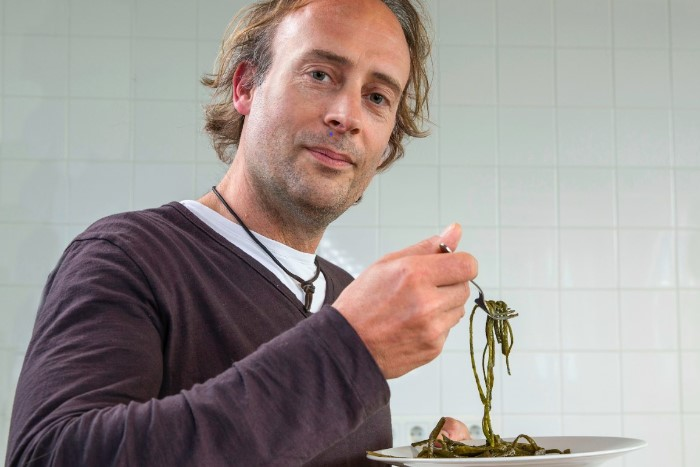
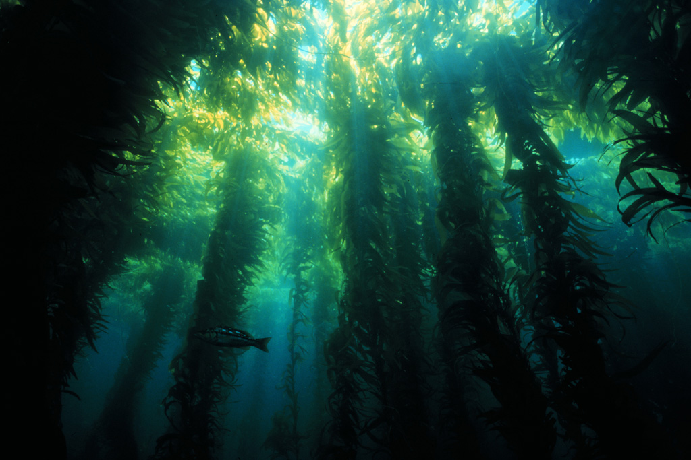
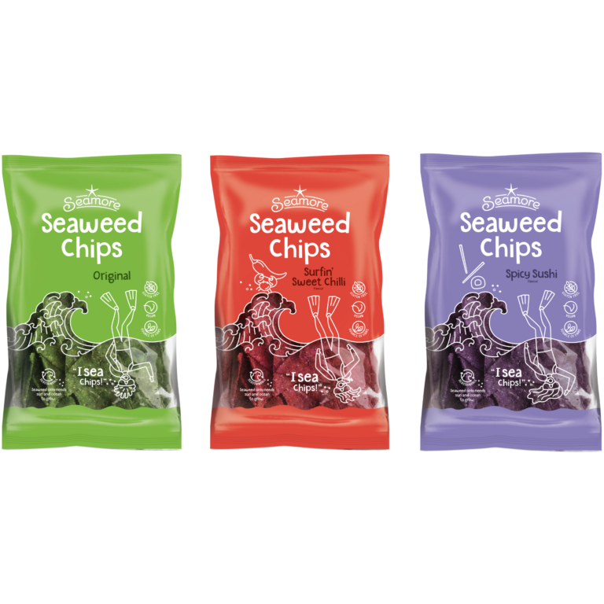

Seamore is a food company based in Amsterdam with a mission to turn seaweed into everyday food. They are doing this by delivering tasty, healthy and sustainable seaweed alternatives to our favorite foods.

It was a real pleasure to speak with Willem, an entrepreneur, mentor and investor with a whole host of experience across different industries. In this edited conversation with Peter Green, Willem spoke about some of the challenges he's experienced leading Seamore and what's next for the company.
What was the motivation behind creating Seamore?
I've been an entrepreneur for a long time and I had just finished my journey with Buzzer, my previous business in the marketing world. I've always enjoyed undertaking seemingly impossible projects because I like the quest that needs to take place. As a result, I was on the lookout for a new revolution to kickstart when I chanced upon this idea.
"I've always enjoyed undertaking seemingly impossible projects because I like the quest that needs to take place."
This experience blew my mind and what followed from this was plenty of research. I found out quickly that nobody was really explaining how you could turn seaweed into great food. It was very clear that nobody had figured out how to get it on people's plates except in Asia. I realised at this moment that I could fix that with my background in business and marketing.

What are some of the challenges you’ve encountered on this journey and how have you overcome these?
In Europe the seaweed industry is still only interesting to a very small group of people. As a food company we want to reach a much larger audience than that. We want to connect with all those people who want better food. That's why it was important for us to focus less on selling seaweed products and more on selling tasty, better food with less guilt attached.
The lesson here is that you need to be wary of navel gazing as an entrepreneur. If you are not wary, you are not going to learn what people really want.
"You need to be wary of navel gazing as an entrepreneur"

In order to capture a larger audience, we stopped promoting seaweed as a staple, vegetable food-product like cucumber or eggplants. Instead, we started developing wraps, chips and bread using seaweed. The larger audience needed better food that was not too dissimilar from their current diet. This is why we also turned to a second range of products - hybrid products.
What’s your outlook on the future of seaweed in the food industry?
From a diet perspective, all kinds of functional benefits of seaweed are being discovered in the food industry. With time we will see more seaweed as a pure ingredient on our dishes.
On the supply side there will be lots of changes too. This is because seaweed is becoming a common ingredient in many industries. As a result, scaling supply will be important as the demand is rising. Eventually we, as seaweed product designers, can actually help the supply side to scale quickly. Currently the domestic market volumes are not great enough in Europe.
What’s next for Seamore?
What I find really exciting is our development of a range of fish alternatives. Micro algae are a fantastic source of protein and have a very interesting blend of nutrients and flavour. I'm really excited about this at the moment and now we have to turn this into a reality.
What advice might you give to someone starting on their entrepreneurial journey in this space?
For me, there was one big mistake I made. I was so passionate about the solution, seaweed, that I forgot to see how the solution could help address people's primal, emotional needs. You need to solve an existing, important, urgent need.
"You need to solve an existing, important, urgent need"

Interviewer: Peter Green